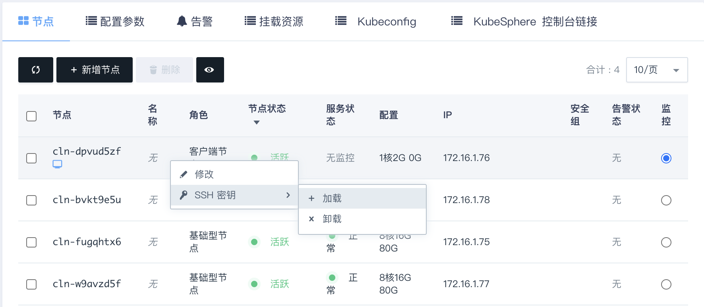

管理员手册
创建
在亿栖云上，您可以很方便的创建和管理一个 QKE 集群。支持横向在线伸缩，同时具有自我诊断功能，即当系统发现某节点坏死时在控制台显示状态。 另外我们还提供了监控告警等功能来帮助您更好的管理集群。集群将运行于私有网络内，结合亿栖云提供的硬盘，在保障高性能的同时兼顾您的数据安全。
准备工作
网络
为了保障数据安全， QKE 集群需要运行在受管私有网络中。若还未创建 VPC 和私有网络，可根据页面提示创建一个，也可以参考创建 VPC 提前创建好。
注意：
受管私有网络需要加入 VPC，并开启 DHCP 服务（默认开启）。如果 VPC 选择的网段是
172.30.0.0/16，那需要修改 docker 默认网段，避免冲突。
API 密钥
存储、网络等插件通过 API 密钥与云平台交互并创建资源，需要进入访问与鉴权 > API 密钥管理页面预先创建好。
硬盘
请确保至少 230GB、14 块硬盘配额。硬盘的默认类型与 QKE 集群云服务器类型一致。如果配额不足请通过工单申请。
负载均衡器和安全组
当要创建高可用的集群（三个主节点）时，需要 1 个负载均衡器配额，1 个安全组配额。
当要通过 EIP 暴露 KubeSphere Console 时，需要 1 个额外的负载均衡器配额，1 个额外的安全组配额。
当两者都满足时，共需要2个负载均衡器配额，2个安全组配额
如果配额不足请通过工单申请。
配置
在创建的对话框中，您需要填写名称 (可选)，选择 QKE 版本号以及选择计费方式。

快速配置
系统默认提供了以下快速配置组：
- 基础型开发测试环境为全部节点选择了基础型云服务器及相应存储，工作节点标记为 worker=node_perf。
- 企业型开发测试环境为全部节点选择了企业型云服务器及相应存储，工作节点标记为 worker=node_super_perf。
- 基础型生产环境为全部节点选择了基础型云服务器及相应存储，工作节点标记为 worker=node_perf。
- 企业型生产环境为全部节点选择了企业型云服务器及相应存储，工作节点标记为 worker=node_super_perf。
可以通过选择上面的快速配置组快速创建集群，也可根据自身需求选择自定义方式配置节点。如果选择自定义方式，需要注意至少要创建 2 个与主节点云服务器类型一致的工作节点（都是基础型或都是企业型），其他云服务器类型的节点可按需创建。

说明：
对于有多种工作节点的集群，部署有挂盘的工作负载时要选择正确的存储类型，请参考云服务器类型与存储类型。
网络设置
选择集群云服务器所在的私网，私网需要在创建集群前准备好。
依赖服务设置
etcd 服务
k8s 集群使用 etcd 作为后端存储，建议使用 etcd 服务 单独部署和管理，以获得更好的可用性和容错性。
说明：
etcd 集群和 QKE 集群需部署在同一 VPC 下。更多详情可参考 k8s 官方文档 Options for Highly Available topology。
如果创建 QKE 集群时没有选择独立的 etcd 服务，系统将使用内置在主节点的 etcd。
注意：
内置 etcd 会占用 QKE 主节点的资源并无法增删节点，生产环境建议独立部署 etcd 服务 。
ELK 服务
QKE 集群的日志组件使用 Elasticsearch 作为后端存储，建议使用 ELK 服务单独部署和管理，以获得更好的可用性和可维护性。
说明：
ELK 集群和 QKE 集群需部署在同一 VPC 下。
如果创建 QKE 集群时没有选择独立的 ELK 服务，系统将使用内置的 Elasticsearch。
注意：
内置 Elasticsearch 会占用 k8s 集群的资源并依赖 k8s 进行管理，在 k8s 集群发生故障期间 Elasticsearch 可能无法正常工作。生产环境建议独立部署 ELK 服务。
服务环境参数设置
| 参数 | 描述 |
|---|---|
| API 密钥 | 此密钥将被用来创建云平台的资源，比如负载均衡器、PV 挂盘等 |
| 安装 KubeSphere | 选择是否安装 KubeSphere，默认为 true 表示安装 KubeSphere 以及监控组件
说明： |
| KubeSphere 控制台 EIP | 如果希望通过公网 LoadBalancer 方式访问 KubeSphere 控制台，可在此选择可用的 EIP，将为此 EIP 自动创建一个负载均衡器并绑定；如果没安装 KubeSphere，无需设置此参数 |
| 选装组件 | 选装希望安装的组件，注意：此选项只有在选项 [安装 KubeSphere] 为 true 时才会生效，而且此选项只负责安装组件，清空此选项并不会执行卸载操作，如需卸载请手动操作；安装这些组件可能需要较长时间，请耐心等待 |
| Kubernetes EIP 地址 | Kubernetes 的外网访问地址，请按照 IPv4 格式填写。例如：139.198.123.23；注意：修改此项会重启所有主节点的 kube-apiserver 从而导致 kube-apiserver 服务短暂中断，建议在业务低谷时间操作 |
| 云服务器 hosts 记录 | 自定义添加到 /etc/hosts 文件的记录，比如 ‘192.168.2.2 host1,192.168.2.3 host2’，多条记录用逗号分割 |
| registry-mirrors | 完整的 Docker 镜像服务地址，比如 https://mirror.harbor.local；多个地址之间用空格隔开 |
| insecure-registries | 需要通过非安全的 HTTP 或不受信任的 HTTPS 访问的 Docker 仓库，比如 mirror.harbor.local，多个地址通过空格切分 |
| Docker 网桥地址 | Docker 网桥的 IP 地址和子网掩码，请按照标准的 CIDR 格式填写。默认为 172.30.0.1/16；注意：修改此项需要通过集群菜单依次重启所有 k8s 节点（包括主节点、基础型节点、企业型节点和 GPU 节点），请在业务低谷时操作 |
| Docker 清理天数 | 每天凌晨 2 点 35 分自动清理指定天数之前创建的 Docker 容器、镜像、网络等闲置资源，默认为 3 表示只清理创建时间超过 3 天（72 小时）的闲置资源；0 表示不自动清理 (范围: 0 - 30) |
| Pod 网段 | Pod 网段，请按照标准的 CIDR 格式填写。例如：10.10.0.0/16 |
| Service 网段 | Service 网段，请按照标准的 CIDR 格式填写。例如：10.96.0.0/16 |
| 集群内 DNS 域名 | 集群内的 DNS 域名，用于 Kubernetes Services |
| NodePort 范围 | 每个节点可分配的 NodePort 范围，例如 ‘30000-32767’。 |
| 最大 pod 数量 | 每个节点上可运行的最大 pod 数量，默认为 120 |
| 网卡插件 | 选择网卡插件（calico 或 flannel） |
| Proxy Mode | 选择一种 Proxy Mode（ipvs 或 iptables） |
| Kubernetes 日志级别 | Kubernetes 的日志级别，数字越大记录越详细，也会占用更多日志空间。遇到问题可以调整日志级别进行 debug；注意：修改此项会重启所有 k8s 组件（kube-apiserver、kube-controller-manager、kube-scheduler、kube-proxy）从而导致服务短暂中断，建议在业务低谷时间操作 (范围: 0 - 10) |
| 日志保留天数 | KubeSphere 使用 ElasticSearch 存储日志，可通过配置此参数自动清理指定天数之前的日志，0 表示不自动清理 (范围: 0 - 30) |
| audit-policy-file | 设置审计规则文件路径，路径为空或文件不存在则不记录审计日志；可通过客户端节点登录到所有主节点并把规则文件放到 /etc/kubernetes/audit/policies/ 目录下；系统已内置默认审计规则文件 /etc/kubernetes/audit/policies/default.yaml；注意：修改此项会重启所有主节点的 kube-apiserver 从而导致 kube-apiserver 服务短暂中断，建议在业务低谷时间操作 |
| audit-log-maxage | 自动清理指定天数之前产生的审计日志文件，默认为 7 表示自动清理创建时间超过 7 天的审计日志文件；注意：在开启审计日志的情况下修改此项会重启所有主节点的 kube-apiserver 从而导致 kube-apiserver 服务短暂中断，建议在业务低谷时间操作 (范围: 0 - 30) |
| audit-log-maxsize | 自动轮转达到指定文件大小的审计日志文件，以 MB 为单位，默认为 1 表示当审计日志文件达到 1 MB 以后触发自动轮转；注意：在开启审计日志的情况下修改此项会重启所有主节点的 kube-apiserver 从而导致 kube-apiserver 服务短暂中断，建议在业务低谷时间操作 (范围: 1 - 200) |
| audit-log-maxbackup | 最多保留指定数量的审计日志文件，默认为 100 表示最多保留最近的 100 个审计日志文件；注意：在开启审计日志的情况下修改此项会重启所有主节点的 kube-apiserver 从而导致 kube-apiserver 服务短暂中断，建议在业务低谷时间操作 (范围: 1 - 100) |
| kube-controller-manager 参数 | kube-controller-manager 参数，自定义配置，支持多项配置，需严格遵循每行配置一项且保持 key: value 的格式，配置示例：add-dir-header: \"true\"，其他配置项请参考官网文档 kube-controller-manager configurations，使用时请去掉 -- 符号 |
| kube-apiserver 参数 | kube-apiserver 参数，自定义配置，支持多项配置，需严格遵循每行配置一项且保持 key: value 的格式，配置示例：add-dir-header: \"true\"，其他配置项请参考官网文档 kube-apiserver configurations，使用时请去掉 -- 符号 |
| kube-scheduler 参数 | kube-scheduler 参数，自定义配置，支持多项配置，需严格遵循每行配置一项且保持 key: value 的格式，配置示例：add-dir-header: \"true\"，其他配置项请参考官网文档 kube-scheduler configurations，使用时请去掉 -- 符号 |
| kube-proxy iptables 参数 | kube-proxy iptables 参数，自定义配置，支持多项配置，需严格遵循每行配置一项且保持 key: value 的格式，配置示例：masqueradeAll: true， 其他配置项请参考 kube-proxy iptables configurations |
| kubelet 参数 | kubelet 参数，自定义配置，支持多项配置，需严格遵循每行配置一项且保持 key=value 的格式，配置示例：--add-dir-header=true，其他配置项请参考官方文档 kubelet configurations，使用时请保留 -- 符号 |
| 用户 SSH 公钥 | 在此填入 SSH 公钥来通过 SSH 连接到集群节点 |
开启选装组件
QKE 默认仅最小化安装 KubeSphere，可通过“选装组件”参数开启其他组件，各组件的功能说明可参考 KubeSphere 官方文档。

创建成功
当 QKE 创建完成之后，您可以查看每个节点的运行状态。当节点的服务状态显示为“正常”状态，表示该节点启动正常。 当每个节点都启动正常后 QKE 集群显示为“活跃”状态，表示您已经可以正常使用 QKE 服务了。
验证
QKE 集群创建完成之后可以进行验证，创建集群一般在 6-12 分左右（视选装的组件而定）。找到客户端节点，点击 vnc 图标。
使用 root / <cluster id> 登录。首次登录需要修改密码。登录客户端节点后可以通过 ssh 免密登录其他节点。
注意：
v2.0.0 - KubeSphere v2.1.1及更老版本使用root / k8s登录。
您也可以通过在客户端节点加载 ssh 密钥，使用 ssh 免密登录。

执行
kubectl get pods --all-namespaces
程序返回所有 pod 状态，整个集群工作正常。
横向伸缩
增加节点
当 QKE 需增加节点以应付应用逐步增多带来的压力，您可以在 QKE 详情页点击“新增节点”按钮，建议新增节点类型与集群主节点类型一致。添加成功详情页会显示服务状态为活跃。
注意：
QKE v1.0.1以及更老的版本只支持同一种类型的工作节点，如果之前是性能型节点，那么之后也只能增加性能型节点，如果增加了其他类型的节点，可能会导致需要挂载硬盘的工作负载无法启动。
删除节点
当客户端连接并不多的时候您也可以在 QKE 详情页选中需要删除的节点，然后点“删除”按钮删除节点，以节省资源和费用。此操作要保证 QKE 集群内有足够资源容纳迁移的 Pod。
自动伸缩
使用 Console 控制台运维工具的自动伸缩功能，选择指定的 QKE 集群以及节点类型，操作类型选择“调整应用节点数量”
然后，点击自动伸缩条目 ID，进入详情页， 配置自动伸缩的阈值及相应的伸缩规则。
配置完成后，当阈值被触发后，相应集群会自动进行节点增删操作，通知列表中的用户会收到通知。
纵向伸缩
如果需要给节点增强配置或降低配置，可以使用扩容集群的功能。注意：此操作会造成扩容节点暂时不可用，操作前请保证 QKE 集群内有足够资源容纳迁移的 Pod。
可以在接下来的界面中调整不同角色的容量。

升级
从 QKE v2.0.0 版本起支持原地升级，老版本高可用集群（三个主节点）可以在不中断现有业务的情况下升级到最新版本，单个主节点集群在升级过程中 k8s apiserver 会有短暂中断。
升级注意事项
-
由于升级过程需要消耗较多的磁盘 IO 以及 CPU，生产环境请在业务低谷期操作，升级过程中请避免部署新工作负载或者变更配置等操作。
-
客户端节点所有数据以及 k8s 节点 /data 目录以外的数据会在重启后重置，如果有此类自定义的数据请先备份后再升级。
-
目前不支持
v1.0.x到v3.0.x的跨版本更新，需要先升级到v2.0.x再升级到v3.0.x。 -
升级前请确保所有 k8s 节点（包括主节点和工作节点）的 /data 数据盘至少有 50G 的可用空间。
-
请确保客户端节点处于开机运行状态。
-
升级一般需要 12 小时，请耐心等待。
-
QKE v1.0.0基于Ubuntu 16.04操作系统，在升级完成后，可能会在 KubeSphere 页面上遇到 CPU 使用率显示不正确的情况，这是由操作系统内核原因造成，需要在升级后根据业务情况关闭集群然后再开启集群来解决（此操作会把操作系统替换成Ubuntu 18.04）。
监控
使用 Console 控制台运维工具的 监控 Dashboard 功能，创建监控面板和图表，选择指定的 QKE 集群、节点以及指标，
删除
用户删除集群可以在 APPCenter 集群列表页选中待删除集群，在更多操作中选择删除，可删除 QKE 集群。集群删除后会进入回收站，用户可以到回收站恢复或永久删除集群，回收站中资源保存 2 小时之后会自动永久删除。集群永久删除后用户可手动删除 QKE 集群残留资源，如硬盘、负载均衡器、安全组。